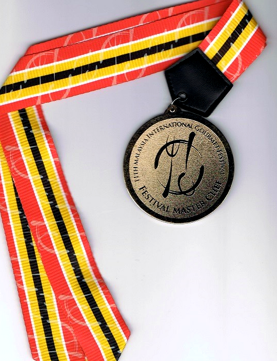
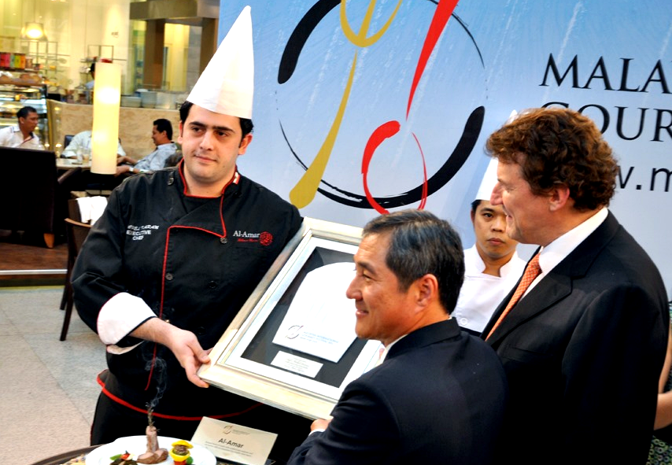
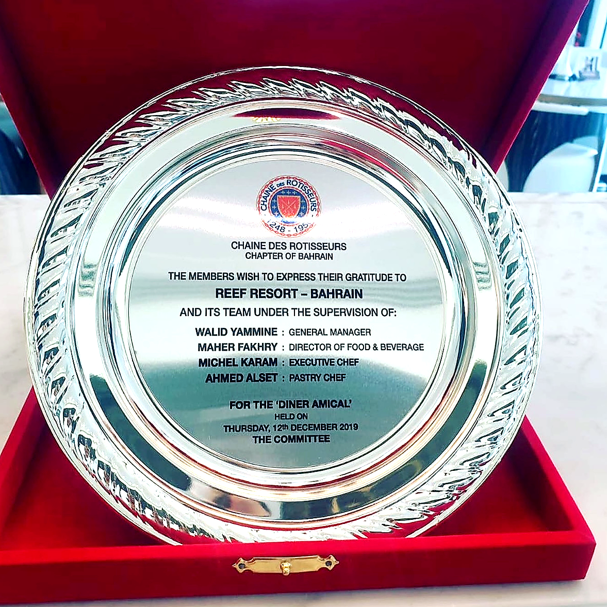
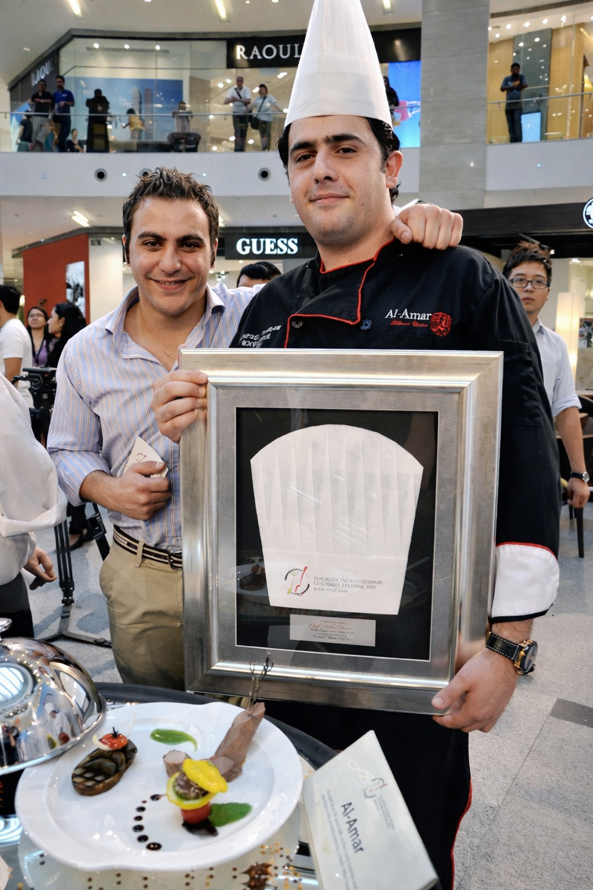
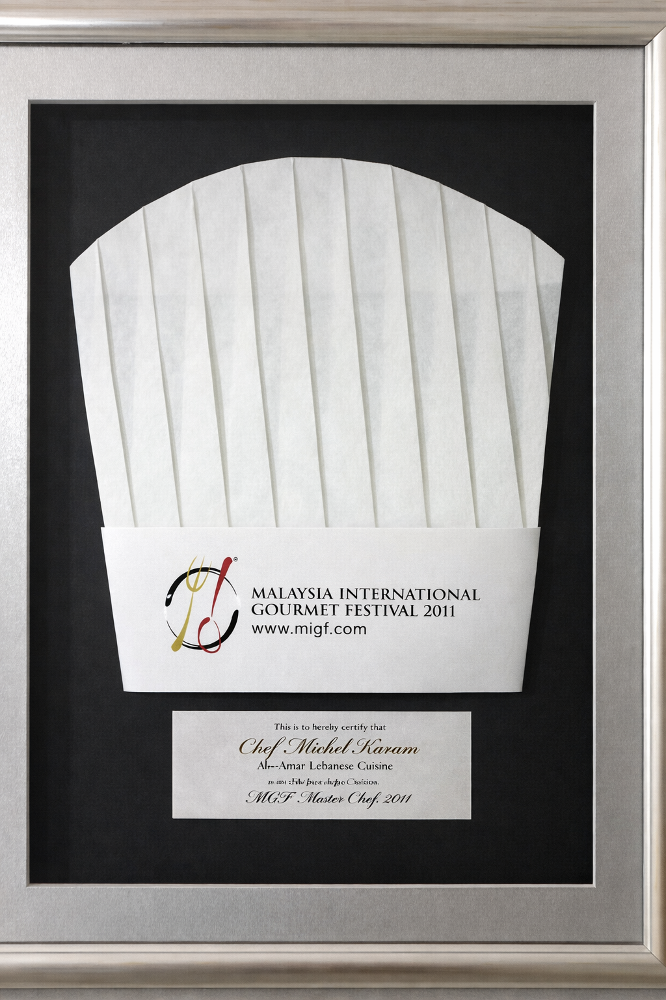
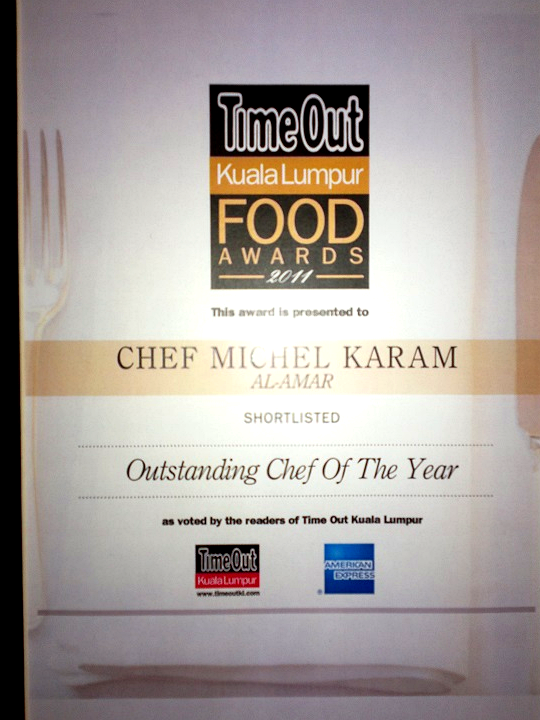

Gold Medal
Malaysia International Gastronomy Festival, 2011.
Recognition
A curated view of Michel Karam’s professional recognition across international culinary festivals, hospitality institutions, leadership roles, and operational excellence.

Professional Recognition
The recognitions presented here reflect more than isolated achievements. They represent a professional standard developed across luxury hospitality, international operations, high-pressure kitchens, and long-term culinary leadership.
From international culinary distinction to hospitality honors, technical certifications, and formal professional recommendation, each acknowledgement reinforces a profile built on discipline, structure, and sustained execution.
Recognition that reflects not only talent, but the ability to deliver standards that hold up over time.

Featured Recognition
Among the strongest recognitions in Michel Karam’s professional record is his distinction at the Malaysia International Gastronomy Festival, where his work was recognized with both a Gold Medal and the Finest Chef Award.
These honors reflect a level of culinary execution capable of standing within international hospitality and competitive culinary environments, while reinforcing the consistency and professionalism that define his wider body of work.
Selected Recognition
A visual record of award presentations, culinary distinction, and professional recognition.





Selected Recognition
Recognition across culinary distinction, hospitality honors, operational training, and professional credibility.
Malaysia International Gastronomy Festival, 2011.
MIGF Malaysia, recognizing culinary distinction within an international festival environment.
Chaîne des Rôtisseurs, Bahrain.
Letter of Recommendation issued by the U.S. Embassy, Beirut.
HACCP & Food Safety Certification and Cost Control Certification.
On-the-Job Skills Departmental Trainer recognition at Grand Millennium Hotel & Spa.
Michel Karam
Recognition matters most when it reflects standards that can be sustained, not moments that simply attract attention.